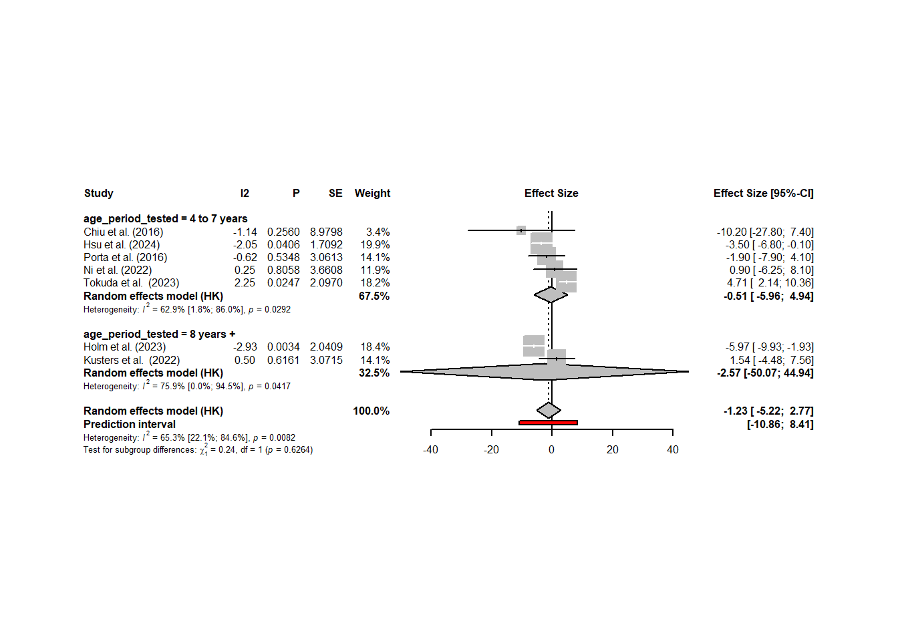

review_data <- tibble(
study = c("Chiu et al. (2016)", "Chiu et al. (2016)", "Guilbert et al. (2023)",
"Harris et al. (2015)", "Harris et al. (2015)", "Harris et al. (2015)",
"Holm et al. (2023)", "Hsu et al. (2024)", "Kusters et al. (2022)",
"Kusters et al. (2022)", "Ni et al. (2022)", "Ni et al. (2022)",
"Ni et al. (2022)", "Ni et al. (2022)", "Ni et al. (2022)",
"Ni et al. (2022)", "Porta et al. (2016)", "Sun et al. (2023)",
"Sun et al. (2023)", "Sun et al. (2023)", "Tokuda et al. (2023)",
"Tokuda et al. (2023)", "Tokuda et al. (2023)", "Tokuda et al. (2023)",
"Wang et al. (2017)", "Whitworth et al. (2024)", "Freire et al. (2010)",
"Freire et al. (2010)", "Guilbert et al. (2023)", "Kusters et al. (2022)",
"Kusters et al. (2022)", "Ni et al. (2022)", "Ni et al. (2022)",
"Ni et al. (2022)", "Porta et al. (2016)"),
exposure_window = c("Averaged across sensitive window", "Averaged over entire pregnancy",
"Comparable data not available", "3rd trimester", "Birth‒age 6",
"Year before cognitive testing", "Pregnancy", "Pregnancy",
"Pregnancy", "Childhood", "1st trimester", "2nd trimester",
"3rd trimester", "Pregnancy", "0–2 years", "2–4 years", "Pregnancy",
"1st trimester", "2nd trimester", "3rd trimester", "Pregnancy",
"0–1 year", "1–3 years", "3–5 years", "Age 9–11 years",
"Age 3.5–4.1 years", "Childhood", "Childhood",
"Comparable data not available", "Pregnancy", "Childhood",
"1st trimester", "2nd trimester", "3rd trimester", "Pregnancy"),
exposure_level = c("Change in full-scale IQ per unit increase",
"Change in full-scale IQ per unit increase", "NA",
"per 3.8 μg/m3 increase", "per 2.1 μg/m3 increase",
"per 2.5 μg/m3 increase", "per 3 μg/m3 increase",
"per 1 μg/m3 increase", "per 5 μg/m3 increase", "per 5 μg/m3 increase",
"per 2 μg/m3 increase", "per 2 μg/m3 increase", "per 2 μg/m3 increase",
"per 2 μg/m3 increase", "per 2 μg/m3 increase", "per 2 μg/m3 increase",
"per 10 μg/m3 increase", "per 5 μg/m3 increase",
"per 5 μg/m3 increase", "per 5 μg/m3 increase", "NA", "NA", "NA", "NA",
"per 7.3 μg/m3 increase", "per 5 μg/m3 increase", "15.40-24.75",
">24.75", "NA", "per 10μg/m3 increase", "per 10μg/m3 increase",
"per 2 ppb NO2", "per 2 ppb NO2", "per 2 ppb NO2",
"per 10 μg/m3 increase"),
standardisation_factor = c(1, 1, NA, 3.8, 2.1, 2.5, 3, 1, 5, 5, 2, 2, 2, 2, 2, 2, 10,
5, 5, 5, NA, NA, NA, NA, 7.3, 5, NA, NA, NA, 10, 10, 2, 2, 2,
10),
exposure = c("PM2.5", "PM2.5", "PM2.5", "PM2.5", "PM2.5", "PM2.5", "PM2.5", "PM2.5",
"PM2.5", "PM2.5", "PM2.5", "PM2.5", "PM2.5", "PM2.5", "PM2.5", "PM2.5",
"PM2.5", "PM2.5", "PM2.5", "PM2.5", "PM2.5", "PM2.5", "PM2.5", "PM2.5",
"PM2.5", "PM2.5", "NO2", "NO2", "NO2", "NO2", "NO2", "NO2", "NO2", "NO2",
"NO2"),
effect_size = c(-0.65, -1.02, NA, -0.20, 0.70, 1.10, -1.79, -0.35, 0.77, 1.18, 0.80,
-0.48, -0.17, 0.18, -0.80, -2.18, -1.90, 1.34, 0.18, 0.16, 0.66, 1.00,
1.02, 0.79, -2.00, 2.56, -1.07, -4.19, NA, 0.53, 0.13, 0.37, 0.16, -0.27,
-1.10),
ci_lower= c(-1.41, -2.78, NA, -1.40, -0.40, 0.00, -2.98, -0.68, -2.24, -2.74, -0.01,
-1.27, -0.88, -1.25, -3.00, -5.00, -7.90, -2.71, -0.50, -0.80, 0.30, 0.54,
0.61, 0.44, -4.84, 1.53, -9.99, -14.02, NA, -0.28, -0.59, -0.03, -0.25, -0.67,
-2.30),
ci_upper = c(0.10, 0.74, NA, 1.10, 1.70, 2.20, -0.58, -0.01, 3.78, 5.10, 1.62, 0.31, 0.54,
1.62, 1.41, 0.64, 4.10, 0.04, 0.87, 0.48, 1.45, 1.82, 1.72, 1.43, 0.84, 3.57,
7.85, 5.64, NA, 1.34, 0.85, 0.77, 0.57, 0.13, 0.10)
)Meta-analysis: Pollution and IQ
This page is designed to provide detail on the meta-analysis undertaken for the review “Air pollution (PM2.5 and NO2) exposure and child IQ: a systematic review and meta-analysis of prospective and longitudinal evidence”
Meta-analysis Model Assumptions
Fixed-effects model
Assumes that all effect sizes stem from a single, homogeneous population, i.e. all studies share the same true effect size. Thus any deviation from the overall effect size by any given study is because of sampling error. Hence why the effect is fixed. Can also be referred to as “equal effects” or “common effect”.
Studies with a small standard error, numerical representation of sampling error, should be better estimators of the true overall effect than studies with large standard errors. Pooled effects in meta-analyses give effect sizes with smaller standard errors (e.g. higher precision) a greater weight, inverse-variance weighting.
Random-effects model
It might be unrealistic to assume studies in a meta-analysis are always completely homogeneous, e.g. the study of interest might be measured in different ways, or the length of exposure varies, or the target populations are not identical. In such cases there may be considerable between-study heterogeneity in the true effects. The random-effects model assumes effects of individual studies differ not only in sampling error alone but in other sources of variance.
The random-effects model assumes there is not only one true effect size but a distribution of true effect sizes, therefore the model estimates the mean of the distribution of true effects. This model does, however, give more attention to small studies when calculating the pooled effect than the fixed-effects model.
Estimators of the Between-Study Heterogeneity
The I2 statistic (J. P. Higgins and Thompson 2002) quantifies between-study heterogeneity, and is directly based on Cochran’s Q. It is defined as the percentage of variability in the effect sizes that is not caused by sampling error. An I2 value of approximately 50% indicates that about half of the variation is due to between-study heterogeneity.
The “rule of thumb” for interpreting this statistic is (J. P. Higgins and Thompson 2002): I2 = 25%: low heterogeneity I2 = 50%: moderate heterogeneity I2 = 75%: substantial heterogeneity.
The H2 statistic (J. P. Higgins and Thompson 2002) is also derived from Cochran’s Q, and similar to I2. When there is no between-study heterogeneity, H2 equals one (or smaller). Values greater than one indicate the presence of between-study heterogeneity. Compared to I2, it is far less common to find this statistic reported in published meta-analyses.
Due to the aprior assumption the studies included in this review lack study homogeneity a random-effects model is preferred however, if heterogeneity is found to be less than 50%, models will be run with fixed-effects.
Definition of R model terms
- TE = specifies the effect size variable
- lower = specifies variable that contains the lower limit of confidence interval
- upper = specifies variable that contains the upper limit of confidence interval
- studlab = study/article label
- sm = summary measure
- common = indicates a fixed-effects model should be run
- random = indicates a random-effects model should be run
- method.tau = defines the r2 estimator
- “DL”, DerSimonian-Laird estimator (DerSimonian and Laird, 1986)
- method.random.ci = controls how confidence internals are calculated for the random-effects model
- “HK”, Method by Hartung and Knapp (2001a/b) based on a refined variance estimator for the treatment estimate and a quantile of a t-distribution with k-1 degrees of freedom where k corresponds to the number of studies in the meta-analysis. This method has shown improved coverage probabilities compared to the classic random effects method (default).
- ad.hoc.ci = ad hoc correction for the Hartung-Knapp (HK) method because in rare settings with very homogeneous treatment estimates, the Hartung-Knapp variance estimate can be arbitrarily small resulting in a very narrow confidence interval (Knapp and Hartung, 2003; Wiksten et al., 2016). An ad hoc variance correction has been proposed by utilising the variance estimate from the classic random effects model with the Hartung-Knapp method.as
- “se”, use variance correction if HK standard error is smaller than standard error from classic random effects meta-analysis (Knapp and Hartung, 2003).
- method.tau.ci = calculates a confidence interval for τ2 and τ
- “J”, Jackson method recommended for DerSimonian-Laird estimator of τ2
- method.I2 = method to estimate the I-squared statistic
- “Q”, based on heterogeneity statistic Q
- data = data table to undertake analysis with
Data Wrangling
Imported Data
knitr::kable(review_data)| study | exposure_window | exposure_level | standardisation_factor | exposure | effect_size | ci_lower | ci_upper |
|---|---|---|---|---|---|---|---|
| Chiu et al. (2016) | Averaged across sensitive window | Change in full-scale IQ per unit increase | 1.0 | PM2.5 | -0.65 | -1.41 | 0.10 |
| Chiu et al. (2016) | Averaged over entire pregnancy | Change in full-scale IQ per unit increase | 1.0 | PM2.5 | -1.02 | -2.78 | 0.74 |
| Guilbert et al. (2023) | Comparable data not available | NA | NA | PM2.5 | NA | NA | NA |
| Harris et al. (2015) | 3rd trimester | per 3.8 μg/m3 increase | 3.8 | PM2.5 | -0.20 | -1.40 | 1.10 |
| Harris et al. (2015) | Birth‒age 6 | per 2.1 μg/m3 increase | 2.1 | PM2.5 | 0.70 | -0.40 | 1.70 |
| Harris et al. (2015) | Year before cognitive testing | per 2.5 μg/m3 increase | 2.5 | PM2.5 | 1.10 | 0.00 | 2.20 |
| Holm et al. (2023) | Pregnancy | per 3 μg/m3 increase | 3.0 | PM2.5 | -1.79 | -2.98 | -0.58 |
| Hsu et al. (2024) | Pregnancy | per 1 μg/m3 increase | 1.0 | PM2.5 | -0.35 | -0.68 | -0.01 |
| Kusters et al. (2022) | Pregnancy | per 5 μg/m3 increase | 5.0 | PM2.5 | 0.77 | -2.24 | 3.78 |
| Kusters et al. (2022) | Childhood | per 5 μg/m3 increase | 5.0 | PM2.5 | 1.18 | -2.74 | 5.10 |
| Ni et al. (2022) | 1st trimester | per 2 μg/m3 increase | 2.0 | PM2.5 | 0.80 | -0.01 | 1.62 |
| Ni et al. (2022) | 2nd trimester | per 2 μg/m3 increase | 2.0 | PM2.5 | -0.48 | -1.27 | 0.31 |
| Ni et al. (2022) | 3rd trimester | per 2 μg/m3 increase | 2.0 | PM2.5 | -0.17 | -0.88 | 0.54 |
| Ni et al. (2022) | Pregnancy | per 2 μg/m3 increase | 2.0 | PM2.5 | 0.18 | -1.25 | 1.62 |
| Ni et al. (2022) | 0–2 years | per 2 μg/m3 increase | 2.0 | PM2.5 | -0.80 | -3.00 | 1.41 |
| Ni et al. (2022) | 2–4 years | per 2 μg/m3 increase | 2.0 | PM2.5 | -2.18 | -5.00 | 0.64 |
| Porta et al. (2016) | Pregnancy | per 10 μg/m3 increase | 10.0 | PM2.5 | -1.90 | -7.90 | 4.10 |
| Sun et al. (2023) | 1st trimester | per 5 μg/m3 increase | 5.0 | PM2.5 | 1.34 | -2.71 | 0.04 |
| Sun et al. (2023) | 2nd trimester | per 5 μg/m3 increase | 5.0 | PM2.5 | 0.18 | -0.50 | 0.87 |
| Sun et al. (2023) | 3rd trimester | per 5 μg/m3 increase | 5.0 | PM2.5 | 0.16 | -0.80 | 0.48 |
| Tokuda et al. (2023) | Pregnancy | NA | NA | PM2.5 | 0.66 | 0.30 | 1.45 |
| Tokuda et al. (2023) | 0–1 year | NA | NA | PM2.5 | 1.00 | 0.54 | 1.82 |
| Tokuda et al. (2023) | 1–3 years | NA | NA | PM2.5 | 1.02 | 0.61 | 1.72 |
| Tokuda et al. (2023) | 3–5 years | NA | NA | PM2.5 | 0.79 | 0.44 | 1.43 |
| Wang et al. (2017) | Age 9–11 years | per 7.3 μg/m3 increase | 7.3 | PM2.5 | -2.00 | -4.84 | 0.84 |
| Whitworth et al. (2024) | Age 3.5–4.1 years | per 5 μg/m3 increase | 5.0 | PM2.5 | 2.56 | 1.53 | 3.57 |
| Freire et al. (2010) | Childhood | 15.40-24.75 | NA | NO2 | -1.07 | -9.99 | 7.85 |
| Freire et al. (2010) | Childhood | >24.75 | NA | NO2 | -4.19 | -14.02 | 5.64 |
| Guilbert et al. (2023) | Comparable data not available | NA | NA | NO2 | NA | NA | NA |
| Kusters et al. (2022) | Pregnancy | per 10μg/m3 increase | 10.0 | NO2 | 0.53 | -0.28 | 1.34 |
| Kusters et al. (2022) | Childhood | per 10μg/m3 increase | 10.0 | NO2 | 0.13 | -0.59 | 0.85 |
| Ni et al. (2022) | 1st trimester | per 2 ppb NO2 | 2.0 | NO2 | 0.37 | -0.03 | 0.77 |
| Ni et al. (2022) | 2nd trimester | per 2 ppb NO2 | 2.0 | NO2 | 0.16 | -0.25 | 0.57 |
| Ni et al. (2022) | 3rd trimester | per 2 ppb NO2 | 2.0 | NO2 | -0.27 | -0.67 | 0.13 |
| Porta et al. (2016) | Pregnancy | per 10 μg/m3 increase | 10.0 | NO2 | -1.10 | -2.30 | 0.10 |
Standardised Data
knitr::kable(standardised_review_data)| study | exposure_window | exposure_level | standardisation_factor | exposure | effect_size | ci_lower | ci_upper | standardised_effect_size | standardised_ci_lower | standardised_ci_upper |
|---|---|---|---|---|---|---|---|---|---|---|
| Chiu et al. (2016) | Averaged across sensitive window | Change in full-scale IQ per unit increase | 1.0 | PM2.5 | -0.65 | -1.41 | 0.10 | -6.50 | -14.10 | 1.00 |
| Chiu et al. (2016) | Averaged over entire pregnancy | Change in full-scale IQ per unit increase | 1.0 | PM2.5 | -1.02 | -2.78 | 0.74 | -10.20 | -27.80 | 7.40 |
| Guilbert et al. (2023) | Comparable data not available | NA | NA | PM2.5 | NA | NA | NA | NA | NA | NA |
| Harris et al. (2015) | 3rd trimester | per 3.8 μg/m3 increase | 3.8 | PM2.5 | -0.20 | -1.40 | 1.10 | -0.53 | -3.68 | 2.89 |
| Harris et al. (2015) | Birth‒age 6 | per 2.1 μg/m3 increase | 2.1 | PM2.5 | 0.70 | -0.40 | 1.70 | 3.33 | -1.90 | 8.10 |
| Harris et al. (2015) | Year before cognitive testing | per 2.5 μg/m3 increase | 2.5 | PM2.5 | 1.10 | 0.00 | 2.20 | 4.40 | 0.00 | 8.80 |
| Holm et al. (2023) | Pregnancy | per 3 μg/m3 increase | 3.0 | PM2.5 | -1.79 | -2.98 | -0.58 | -5.97 | -9.93 | -1.93 |
| Hsu et al. (2024) | Pregnancy | per 1 μg/m3 increase | 1.0 | PM2.5 | -0.35 | -0.68 | -0.01 | -3.50 | -6.80 | -0.10 |
| Kusters et al. (2022) | Pregnancy | per 5 μg/m3 increase | 5.0 | PM2.5 | 0.77 | -2.24 | 3.78 | 1.54 | -4.48 | 7.56 |
| Kusters et al. (2022) | Childhood | per 5 μg/m3 increase | 5.0 | PM2.5 | 1.18 | -2.74 | 5.10 | 2.36 | -5.48 | 10.20 |
| Ni et al. (2022) | 1st trimester | per 2 μg/m3 increase | 2.0 | PM2.5 | 0.80 | -0.01 | 1.62 | 4.00 | -0.05 | 8.10 |
| Ni et al. (2022) | 2nd trimester | per 2 μg/m3 increase | 2.0 | PM2.5 | -0.48 | -1.27 | 0.31 | -2.40 | -6.35 | 1.55 |
| Ni et al. (2022) | 3rd trimester | per 2 μg/m3 increase | 2.0 | PM2.5 | -0.17 | -0.88 | 0.54 | -0.85 | -4.40 | 2.70 |
| Ni et al. (2022) | Pregnancy | per 2 μg/m3 increase | 2.0 | PM2.5 | 0.18 | -1.25 | 1.62 | 0.90 | -6.25 | 8.10 |
| Ni et al. (2022) | 0–2 years | per 2 μg/m3 increase | 2.0 | PM2.5 | -0.80 | -3.00 | 1.41 | -4.00 | -15.00 | 7.05 |
| Ni et al. (2022) | 2–4 years | per 2 μg/m3 increase | 2.0 | PM2.5 | -2.18 | -5.00 | 0.64 | -10.90 | -25.00 | 3.20 |
| Porta et al. (2016) | Pregnancy | per 10 μg/m3 increase | 10.0 | PM2.5 | -1.90 | -7.90 | 4.10 | -1.90 | -7.90 | 4.10 |
| Sun et al. (2023) | 1st trimester | per 5 μg/m3 increase | 5.0 | PM2.5 | 1.34 | -2.71 | 0.04 | 2.68 | -5.42 | 0.08 |
| Sun et al. (2023) | 2nd trimester | per 5 μg/m3 increase | 5.0 | PM2.5 | 0.18 | -0.50 | 0.87 | 0.36 | -1.00 | 1.74 |
| Sun et al. (2023) | 3rd trimester | per 5 μg/m3 increase | 5.0 | PM2.5 | 0.16 | -0.80 | 0.48 | 0.32 | -1.60 | 0.96 |
| Tokuda et al. (2023) | Pregnancy | NA | NA | PM2.5 | 0.66 | 0.30 | 1.45 | NA | NA | NA |
| Tokuda et al. (2023) | 0–1 year | NA | NA | PM2.5 | 1.00 | 0.54 | 1.82 | NA | NA | NA |
| Tokuda et al. (2023) | 1–3 years | NA | NA | PM2.5 | 1.02 | 0.61 | 1.72 | NA | NA | NA |
| Tokuda et al. (2023) | 3–5 years | NA | NA | PM2.5 | 0.79 | 0.44 | 1.43 | NA | NA | NA |
| Wang et al. (2017) | Age 9–11 years | per 7.3 μg/m3 increase | 7.3 | PM2.5 | -2.00 | -4.84 | 0.84 | -2.74 | -6.63 | 1.15 |
| Whitworth et al. (2024) | Age 3.5–4.1 years | per 5 μg/m3 increase | 5.0 | PM2.5 | 2.56 | 1.53 | 3.57 | 5.12 | 3.06 | 7.14 |
| Freire et al. (2010) | Childhood | 15.40-24.75 | NA | NO2 | -1.07 | -9.99 | 7.85 | NA | NA | NA |
| Freire et al. (2010) | Childhood | >24.75 | NA | NO2 | -4.19 | -14.02 | 5.64 | NA | NA | NA |
| Guilbert et al. (2023) | Comparable data not available | NA | NA | NO2 | NA | NA | NA | NA | NA | NA |
| Kusters et al. (2022) | Pregnancy | per 10μg/m3 increase | 10.0 | NO2 | 0.53 | -0.28 | 1.34 | 0.53 | -0.28 | 1.34 |
| Kusters et al. (2022) | Childhood | per 10μg/m3 increase | 10.0 | NO2 | 0.13 | -0.59 | 0.85 | 0.13 | -0.59 | 0.85 |
| Ni et al. (2022) | 1st trimester | per 2 ppb NO2 | 2.0 | NO2 | 0.37 | -0.03 | 0.77 | 1.85 | -0.15 | 3.85 |
| Ni et al. (2022) | 2nd trimester | per 2 ppb NO2 | 2.0 | NO2 | 0.16 | -0.25 | 0.57 | 0.80 | -1.25 | 2.85 |
| Ni et al. (2022) | 3rd trimester | per 2 ppb NO2 | 2.0 | NO2 | -0.27 | -0.67 | 0.13 | -1.35 | -3.35 | 0.65 |
| Porta et al. (2016) | Pregnancy | per 10 μg/m3 increase | 10.0 | NO2 | -1.10 | -2.30 | 0.10 | -1.10 | -2.30 | 0.10 |
Overall Meta-analysis
Summarise meta output for PM
summary(m.pm_overall) Effect Size 95%-CI %W(random)
Chiu et al. (2016) -6.5000 [-14.1000; 1.0000] 2.6
Chiu et al. (2016) -10.2000 [-27.8000; 7.4000] 0.6
Harris et al. (2015) -0.5300 [ -3.6800; 2.8900] 6.3
Harris et al. (2015) 3.3300 [ -1.9000; 8.1000] 4.4
Harris et al. (2015) 4.4000 [ 0.0000; 8.8000] 5.0
Holm et al. (2023) -5.9700 [ -9.9300; -1.9300] 5.4
Hsu et al. (2024) -3.5000 [ -6.8000; -0.1000] 6.2
Kusters et al. (2022) 1.5400 [ -4.4800; 7.5600] 3.5
Kusters et al. (2022) 2.3600 [ -5.4800; 10.2000] 2.4
Ni et al. (2022) 4.0000 [ -0.0500; 8.1000] 5.3
Ni et al. (2022) -2.4000 [ -6.3500; 1.5500] 5.5
Ni et al. (2022) -0.8500 [ -4.4000; 2.7000] 6.0
Ni et al. (2022) 0.9000 [ -6.2500; 8.1000] 2.8
Ni et al. (2022) -4.0000 [-15.0000; 7.0500] 1.4
Ni et al. (2022) -10.9000 [-25.0000; 3.2000] 0.9
Porta et al. (2016) -1.9000 [ -7.9000; 4.1000] 3.5
Sun et al. (2023) 2.6800 [ -5.4200; 0.0800] 7.0
Sun et al. (2023) 0.3600 [ -1.0000; 1.7400] 8.8
Sun et al. (2023) 0.3200 [ -1.6000; 0.9600] 8.9
Wang et al. (2017) -2.7400 [ -6.6300; 1.1500] 5.6
Whitworth et al. (2024) 5.1200 [ 3.0600; 7.1400] 8.0
Number of studies: k = 21
Effect Size 95%-CI t p-value
Random effects model (HK) 0.0124 [-1.5886; 1.6133] 0.02 0.9873
Prediction interval [-5.0862; 5.1110]
Quantifying heterogeneity (with 95%-CIs):
tau^2 = 5.3853 [1.0515; 21.4916]; tau = 2.3206 [1.0254; 4.6359]
I^2 = 66.3% [46.7%; 78.7%]; H = 1.72 [1.37; 2.17]
Test of heterogeneity:
Q d.f. p-value
59.32 20 < 0.0001
Details of meta-analysis methods:
- Inverse variance method
- DerSimonian-Laird estimator for tau^2
- Jackson method for confidence interval of tau^2 and tau
- Calculation of I^2 based on Q
- Hartung-Knapp adjustment for random effects model (df = 20)
- Hartung-Knapp prediction interval (df = 20)Summarise meta output for No2
summary(m.no2_overall) Effect Size 95%-CI %W(random)
Kusters et al. (2022) 0.5300 [-0.2800; 1.3400] 25.2
Kusters et al. (2022) 0.1300 [-0.5900; 0.8500] 26.9
Ni et al. (2022) 1.8500 [-0.1500; 3.8500] 9.9
Ni et al. (2022) 0.8000 [-1.2500; 2.8500] 9.6
Ni et al. (2022) -1.3500 [-3.3500; 0.6500] 9.9
Porta et al. (2016) -1.1000 [-2.3000; 0.1000] 18.5
Number of studies: k = 6
Effect Size 95%-CI t p-value
Random effects model (HK) 0.0910 [-0.9828; 1.1648] 0.22 0.8362
Prediction interval [-1.8486; 2.0306]
Quantifying heterogeneity (with 95%-CIs):
tau^2 = 0.3948 [0.0000; 6.2997]; tau = 0.6283 [0.0000; 2.5099]
I^2 = 51.6% [0.0%; 80.7%]; H = 1.44 [1.00; 2.28]
Test of heterogeneity:
Q d.f. p-value
10.33 5 0.0665
Details of meta-analysis methods:
- Inverse variance method
- DerSimonian-Laird estimator for tau^2
- Jackson method for confidence interval of tau^2 and tau
- Calculation of I^2 based on Q
- Hartung-Knapp adjustment for random effects model (df = 5)
- Hartung-Knapp prediction interval (df = 5)Forest Plots
forest(m.pm_overall,
sortvar = TE,
prediction = TRUE,
print.tau2 = FALSE,
print.I2 = TRUE,
print.I2.ci = TRUE,
leftcols = c("studlab", "statistic", "pval", "seTE", "w.random"),
leftlabs = c("Study", "I2", "P", "SE", "Weight"),
rightcols = c("effect.ci"),
fontsize = 6,
spacing = 0.5,
title = "Forest Plot for PM2.5")
forest(m.no2_overall,
sortvar = TE,
prediction = TRUE,
print.tau2 = FALSE,
print.I2 = TRUE,
print.I2.ci = TRUE,
leftcols = c("studlab", "statistic", "pval", "seTE", "w.random"),
leftlabs = c("Study", "I2", "P", "SE", "Weight"),
rightcols = c("effect.ci"),
fontsize = 6,
spacing = 0.5,
title = "Forest Plot for NO2")
To do
[] Run meta-analysis models by exposure time
[] Include risk of bias and sample size for each study?
Useful links
Doing Meta-Analysis with R: A Hands-On Guide - very useful resource for undertaking a meta-analysis using R.